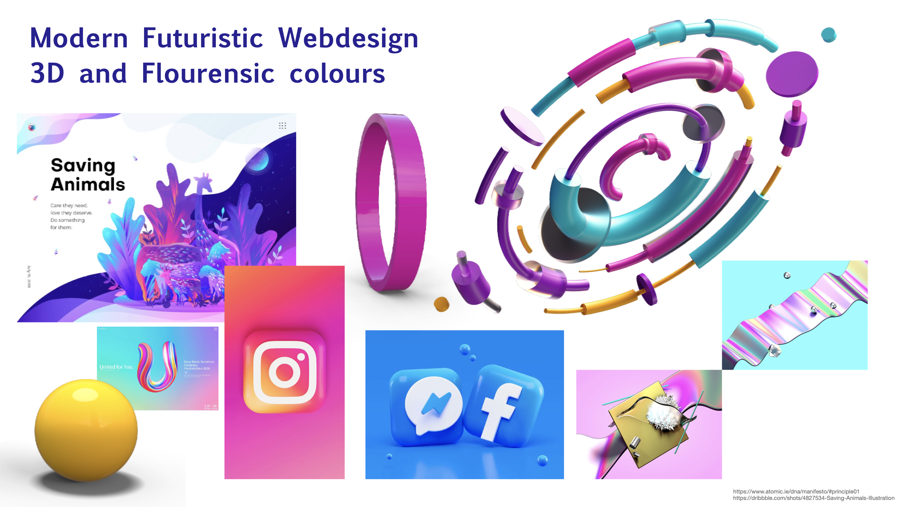
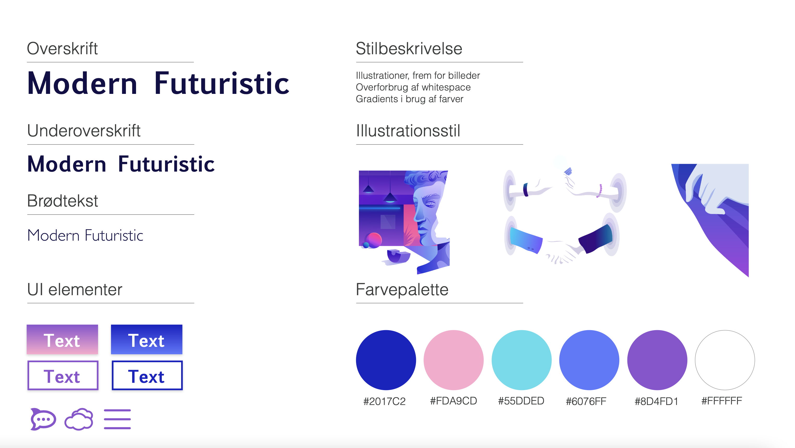
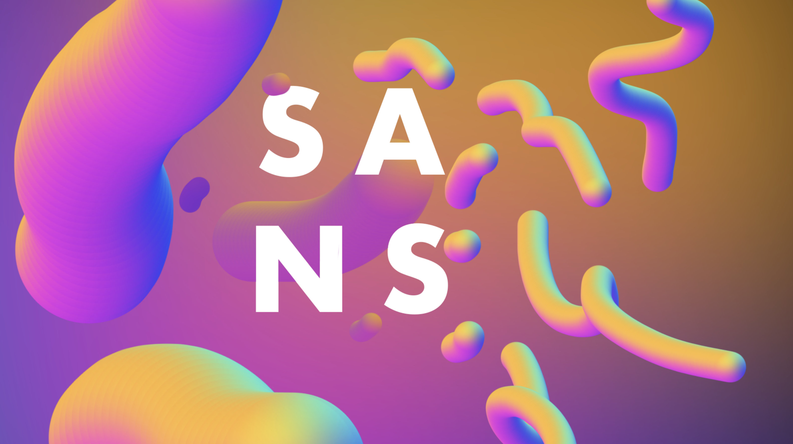

02
WEB
Introduktion
Grundlæggende Web
I forløbet “Grundlæggende Web” fik vi lært fundamental opbygning i HTML og CSS, med endemålet om at kunne lave et responsivt webdesign. Derudover blev vi introduceret til at arbejde med wireframes gennem Adobe XD, logodesign i Illustrator og billedredigering i Photoshop, hvor vi med inspiration i en række forskellige stilarter kunne begynde at forme vores egne designs.
Indledende øvelser
Stilpitch
Vi gennemgik en række forskellige stilarter; Flat Design, Neumorphism, brutal Web Deisgn, Digital Retro Design fra 90’erne, Video Game Design, Hipster Style, Minimalisme og Modern Futuristic Webdesign.
Her arbejdede min gruppe med sidstnævnte; Modern Futuristic Webdesign, som jeg genbrugte elementer af i min endelige website. Stilarten er kendetegnet ved 3D-elementer, ofte brugt i webdesign med et nærmest overforbrug af white space.
Modern Futuristic Webdesign
Moodboard

Styletile

Eget design

Det færdige produkt: LerLer
Responsiv site
Med udgangspunkt i min venindes nyopstartede keramikværksted, LerLer designede og byggede jeg en responsiv hjemmeside for hende. LerLer er et socialt værested for medlemmer, der kan komme når de vil skabe. Det handler om at skabe, lege og forme. Derfor skulle hjemmesiden udstråle både kvalitet og sjov.
For at skabe genkendelighed fra andre keramik-universer, gjorde jeg brug af simplicitet og white space, som jeg lærte gennem research var gennemgående stilelementer. Dog ville jeg gerne få strukturerne frem, da det er essensen af LerLer, derfor kiggede jeg mod 3D og Neomorphisme.
Hvis du vil se mere, så klik på nedenstående links.
Se live
Det har jeg lært
Værktøjer og ressourcer
Photoshop
Adobe XD
Adobe Color wheel
Webfonts
W3-validator
W3 Schools
Unsplash
Metoder og produktioner
Skitsering
Moodboard
Stiletyle
Splashbilleder
Favicon
Teori
Gestaltlovene
Farvelære
Mobile First
Webdesign koncentioner
Stilarter
Grafisk analyse
Graphic Design Foundations
Research og indsamling af loblive billeder
Kodning
HTML
Dokumentstruktur
Layoutdiagram
Nesting
Syntaks
Semantik
Atributter
Debugging
CSS
Gridbaseret layout
Block og inlineelementer
Boxmodel
Mediaqueries
Margin, Border og Padding
ID og Classes